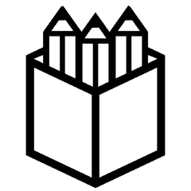
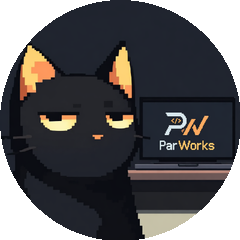

今日 GitHub 爆发
4349★
单日涨星四千多
OpenCut · 开源版剪映
#01
视频编辑
免费剪视频
OpenCut-app / OpenCut

开源的 CapCut 替代视频编辑器
TypeScript
69,121 ★
开发者用脚投票，一天涨四千三百星
| 00| 25| 50| 75| 99
#02
工程师工具
工程师 skill 包
mattpocock / skills

给真正工程师的 skills，直接来自作者目录
Shell
170,162 ★
作者把自家命令行工具箱搬出来了
#03
AI 安全给开发者
拦 AI 危险命令
Dicklesworthstone / destructive_command_guard

拦截 agent 执行危险的 git 和 shell 命令
Rust
4,384 ★
AI 跑命令的保险栓，越能干越要拦
100m80m60m40m20m
#04
团队协作
团队协作设计
penpot / penpot

开源设计平台，给需要可扩展协作的产品团队
Clojure
56,140 ★
开源替代方案，产品团队改稿利器
#05
游戏模拟
PS5 模拟器
par274 / sharpemu

实验性的 PlayStation 5 模拟器项目
C#
2,104 ★
实验性项目也聚了两千多星
#06
系统工具 · 连续霸榜
Windows 瘦身去预装
Raphire / Win11Debloat

轻量脚本卸预装关遥测，精简定制 Windows
PowerShell
51,630 ★
连续霸榜，Win10 和 11 都能用
今天这六个
你会想试哪个
你会想试哪个
★GitHub 星探
每天给你挑热门开源项目
视频工具
AI 安全
团队设计
游戏模拟